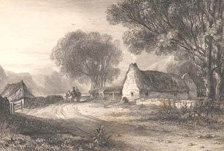

|
|
||||||
|
|
Home | Corson Collection | Biography | Works | Image Collection | Recent Publications | Portraits | Correspondence | Forthcoming Events | Links | E-Texts | Contact Minstrelsy of the Scottish BorderFirst Edition, First Impression: Minstrelsy of the Scottish Border: Consisting of Historical and Romantic Ballads, Collected in the Southern Counties of Scotland; With a Few of Modern Date, Founded Upon Local Tradition. In Two Volumes. Vol. I (II). Kelso: Printed By James Ballantyne, For T. Cadell Jun. And W. Davies, Strand, London; And Sold by Manners and Miller, and A. Constable, Edinburgh, 1802. Compilation | Reception | Links
Scott fitted his ballad-collecting trips around his duties as Sheriff of Selkirkshire (see Professional Life). In addition to his own (often hazardous) travels in Ettrick Forest and Liddesdale, he received assistance from other ballad-collectors, including John Leyden, Robert Jamieson, Robert Surtees, George Ellis, and Bishop Percy himself. Scott's approach to authenticating, editing, and arranging material caused controversy at the time and falls short of modern standards of scholarship. He relied on an innate 'feeling' for the genuine article and did not hesitate to 'improve' ballads, changing words, inserting new stanzas, mending rhymes and rhythms, fusing various versions, and sometimes setting old legends to verses of his own. Scott argued that the ballad was, by definition, a fluid form, to which each interpreter gave his or her own stamp. He insisted that he was always faithful to the spirit of a ballad, and valued readability over antiquarian exactitude. Scott was also careful not to deal too rude a shock to the aesthetic sensibilities of readers brought up on neoclassical verse.
Along with the third volume, Scott also began preparing a second edition of the first two which would include further traditional ballads gathered on his own travels or sent to him by fellow antiquaries. While ballad-hunting to this purpose in Selkirkshire in April 1802, Scott made the acquaintance of the young farmer, William Laidlaw, later to become a valued member of the Abbotsford 'family'. Laidlaw showed Scott a copy of 'Auld Maitland', a ballad Scott had heard of but so far never seen. Laidlaw had been given the copy by one of his shepherds, James Hogg, whom Scott visited shortly afterwards, the beginning of an important literary friendship. On May 25, 1803, the second edition of the Minstrelsy was published, comprising revised versions of vols. I-II along with the 'modern' third volume. A third, expanded edition appeared in 1806, a fourth in 1810 (containing, for all Scott's feel for authenticity, three forgeries by Surtees), and the fifth and final edition in 1812, containing ninety-six ballads, forty-three printed for the first time.  ReceptionThe Minstrelsy sold well on both sides of the border, and the first edition was exhausted in six months. German, Danish, and Swedish translations followed, and North American editions gave Scott his first taste of transatlantic fame. The volume's success laid the foundations of James Ballantyne's career as a printer. 'I shall ever think', he wrote, 'the printing the Scottish Minstrelsy one of the most fortunate circumstances of my life' (letter to Scott, March 30, 1802). Critical response was highly favourable too, though not all reviewers were impressed by the modern imitations. The one negative notice was published by the Monthly Review, but even this complimented Scott on his 'fidelity, taste, and learning'. For all the reservations that have subsequently been expressed concerning Scott's editorial principles, his skill and commitment as a collector is beyond doubt. The Minstrelsy, over its various editions, contains almost a quarter of the known corpus of ancient Scottish ballads. Links
Last
updated: 19-Dec-2011
|
|||||